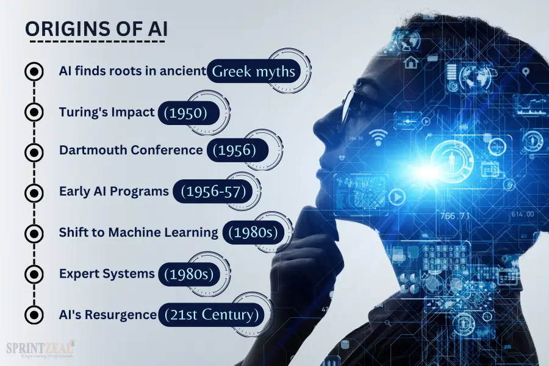

Artificial Intelligence (AI) is a branch of computer science that focuses on creating systems capable of performing tasks that typically require human intelligence. These tasks include learning, reasoning, problem-solving, perception, language understanding, and decision-making. AI can be categorized into two main types: narrow AI which is designed for specific tasks and general AI, which aims to perform any intellectual task that a human can do. The field of AI encompasses various subfields such as machine learning, natural language processing, computer vision, and robotics. AI technologies are increasingly being integrated into various industries, transforming the way we work, communicate, and interact with technology.
